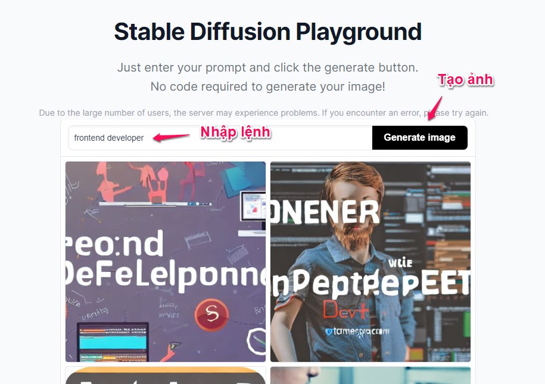
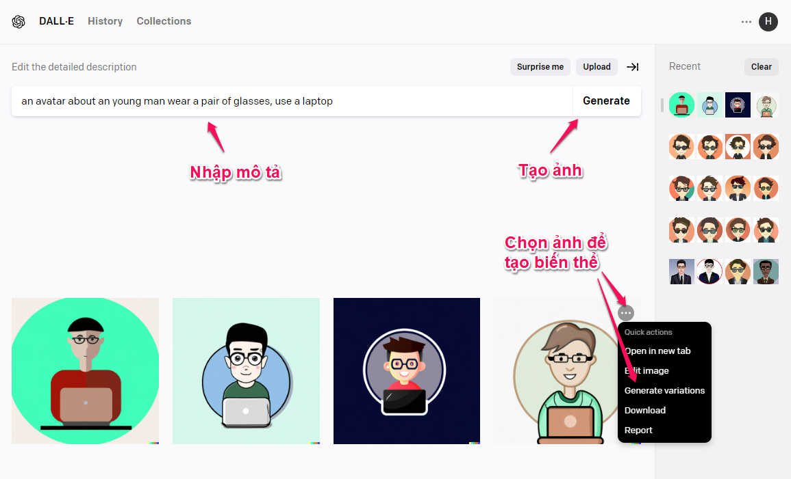
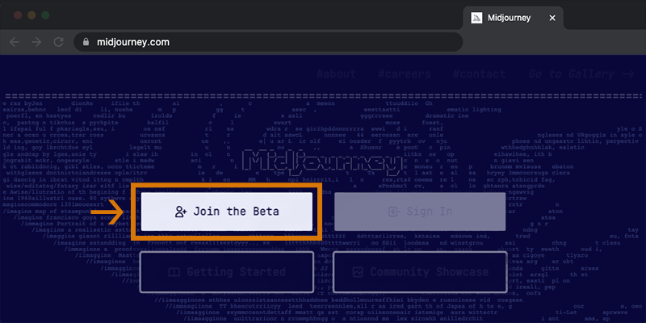

Một số trang web cho phép tạo ảnh bằng cách gõ text
1.DeepAI
Trang web này cho phép bạn tạo ảnh mà không cần tài khoản luôn, nhưng sẽ có hạn chế hơn so với người dùng trả phí. Các bạn chỉ cần truy cập https://deepai.org/machine-learning-model/text2img, nhập mô tả cho ảnh bạn muốn tạo ở mục Create an image from text prompt, chọn một phong cách bên dưới (trừ những cái bị khóa là dành cho member trả phí), sau đó bấm Generate. Ngồi chờ khoảng 1 phút, AI sẽ tạo ngẫu nhiên cho bạn 1 bức ảnh. Nếu vừa ý, bạn có thể bấm vào Download để tải ảnh về xài, hoặc bấm vào Enhance để phóng to ảnh lên. Nếu không thì nhập lại mô tả và Generate lại cho đến khi vừa ý.

Ngoài các chức năng free, bạn có thể đăng nhập và đăng ký các gói PRO để có nhiều chức năng hơn như: Private style, Private image generation, API access (cho developer), …
2.Stable Diffusion
Cách dùng tương tự DeepAI, tuy nhiên không có chọn style và mỗi lần tạo ảnh sẽ tạo ra 1 bộ 4 ảnh.
Ngoài ra, trang này dùng hoàn toàn miễn phí và không cần đăng nhập.
-
3.DALL-E
Một sản phẩm khác của OpenAI, dùng chung tài khoản với ChatGPT, nên nếu bạn chưa có tài khoản thì có thể tham khảo bài viết này để đăng ký. Sau khi đăng ký xong, đăng nhập vào trang web https://openai.com/dall-e-2/ để tạo ảnh. Cách tạo ảnh cũng tương tự 2 website trên, nhập mô tả rồi bấm Generate và chờ AI tạo ảnh. Kết quả mỗi lần tạo là 1 bộ 4 ảnh tương tự nhau, sau đó chúng ta có thể chọn 1 ảnh trong đó và tiếp tục tạo ảnh dựa trên ảnh gốc đã chọn (tạo ra các biến thể khác).
Chú ý đây là dịch vụ có trả phí, tuy nhiên lần đầu đăng ký chúng ta sẽ có 50 credit để sử dụng trong vòng 1 tháng (tương đương với 50 lần tạo ảnh hoặc chỉnh sửa ảnh). Sau đó mỗi tháng chúng ta sẽ có thêm 15 credit hạn sử dụng 1 tháng (hết hạn tự biến mất). Nếu bạn muốn tạo nhiều ảnh hơn thì có thể nạp tiền vào tài khoản để mua thêm credit (hạn 12 tháng).
4.Midjourney
Trùm cuối hy vọng sẽ không làm các bạn thất vọng. Đây là một trong những AI tạo ra image rất đẹp, các bạn có thể xem những ảnh được cộng đồng tạo ra mới nhất ở đây: Midjourney Community Showcase Để sử dụng AI này các bạn cần đăng ký tài khoản Discord trước, sau đó join vào server của Midjourney để tạo ảnh bằng cách tương tác với bot Midjourney trên Discord. Chú ý với tài khoản mới thì chúng ta sẽ có miễn phí 25 lần request, sau đó sẽ phải nạp tiền vào để sử dụng tiếp (hoặc bạn có thể tạo tài khoản mới để có thêm 25 lần miễn phí).
Truy cập trang chủ của midjourney chọn Join the Beta hoặc vào thẳng Midjourney Discord server Sau khi join được vào Midjourney Discord server, tìm đến các channel dành cho Newbie. Chúng ta sẽ tạo ảnh ở đây, và cũng có thể xem ảnh do người khác tạo để tham khảo các ý tưởng (keyword) và sản phẩm của họ.